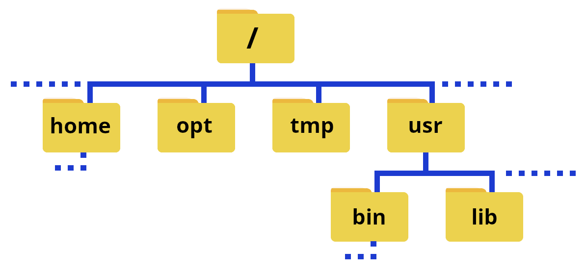
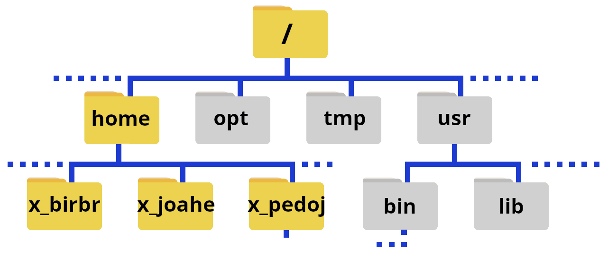
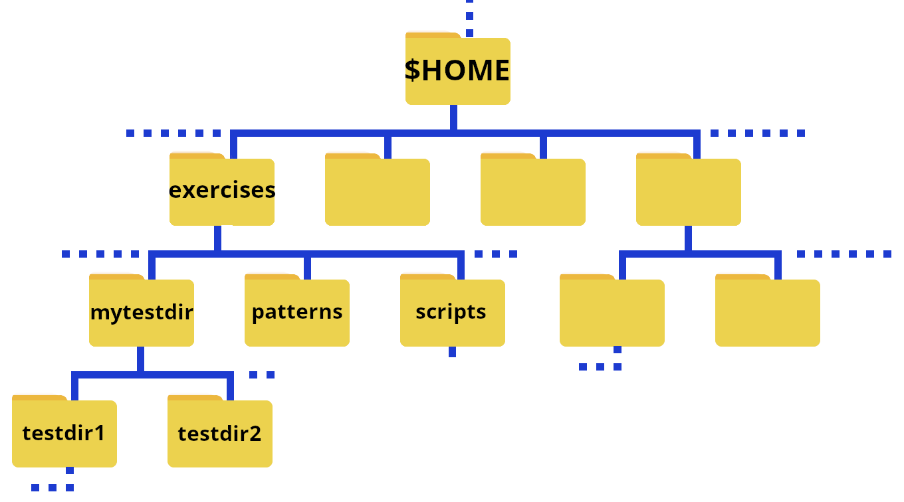

Navigating the File System¶
This section is going to be a high-level talk about the Linux filesystem concepts, not a low-level description of filesystem types.
Learning objectives
Questions
- How do I change directory?
- How do I list my files?
Learning objectives
- Learn how to navigate the Linux file system
- Learn about files and directories
- Learn about paths
- Learn about options (flags) and arguments to shell commands
- Learn about the tab completion

The Linux filesystem directory structure starts with the top root directory, which is shown as /. Below this are several other standard directories. Of particular interest are usr/bin, home, usr/lib, and usr/lib64. A common directory which you will also often find is usr/local/bin.
The picture on the right shows typical subdirectories under / (note that the command ‘tree’ does not work at all HPC centres, though it does work on Tetralith - see the page tree under “Extras section for how to install if it is missing). Some of the directories have a symbolic link to a different name - this is often done to make it quicker to write, but can also be for compatibility reasons since some software have hardcoded paths.
Note
The path or pathname is the representation of the location of a file or folder/directory on a computer file system.
- / is the root of the directory structure on a Linux filesystem
- /usr/bin contains (most) of the system-specific binaries
- /usr/local/bin holds non-system binaries. often locally compiled/maintained packages
- /home is where the home directories of the users of the system are located
- /usr/lib holds kernel modules and shared library images needed to boot the system and run commands in the root filesystem
- /usr/lib64 is the same as /usr/lib, just for 64-bit libraries
User-installed binaries are often located in /opt.
The file system could also be illustrated like this:

Note
The character / can be
- the root directory, if it is at the front of a file or directory name
- a separator if it appears inside a path.
Note
If you are on a local cluster, on an HPC centre, etc. where you are not root, you will as default be in your home directory when you login. You can use cd .. a couple times to go to the root of the system and do tree there if you want, or do tree in your home directory (you can always return there with just cd).
Running tree in / on a supercomputing centre will probably give a very large/long output!
Home folders on Tetralith¶

The above shows an illustration where the home folders are emphasized.
Your home directory¶
When you login to the computer (as a non root user), you will end up in your home directory.
The path to your home directory varies somewhat. Here are some examples for me:
- Tetralith:
/home/x_birbr - Kebnekaise:
/home/b/bbrydsoe - My laptop, ncc-1701:
/home/bbrydsoe - My home desktop, defiant:
/home/bbrydsoe
Note
You can always use the command pwd to see the actualy path!
You will always return to your home directory by giving the command cd and pressing enter.
There are is also an “environment variable” that can be used as shortcut for the path: $HOME. We will talk more about (environment) variables later.
pwd¶
The command pwd (print working directory) will print out the full pathname of the working directory to the screen.
You can use this to find out which directory you are in.
Example, in your home directory¶
Example, in a directory named testdir¶
On Tetralith, user x_birbr:
Example, in subdirectory mydir under directory testdir¶
On Tetralith, user x_birbr:
ls - listing files/directories¶
The ls command is used to list files. If you just give the command “ls” with no flags it will list all files in the current directory except for hidden files.
This way you can to list files/subdirectories for any directory, but the default one is the one you are currently standing in.
Some examples:
ls /lists contents of the root directoryls ..lists the contents of the parent directory of the currentls ~lists the contents of your user home directoryls *lists contents of current directory and subdirectories
Commonly used flags
-d */lists only directories-alists content including hidden files and directories-llists content in long table format (permissions, owners, size in bytes, modification date/time, file/directory name)-lhadds an extra column to above representing size of each file/directory-tlists content sorted by last modified date in descending order-trlists content sorted by last modified date in ascending order-Rlists contents recursively in all subdirectories-slist files with their sizes-Ssort files/directories by size in descending order-Srsort files/directories by size in ascending order
To get more flags, type ls --help or man ls in the terminal to see the manual.
Tip
You can often get more info on flags/options and usage for a Linux command with
COMMAND --helpman COMMAND
where COMMAND is the Linux command you want information about, like ls, mkdir, etc.
The output for a few of the flags, for a directory with two subdirectories and some files
[x_birbr@tetralith1 mytestdir]$ ls
myfile.txt myotherfile.txt testdir1 testdir2
[x_birbr@tetralith1 mytestdir]$ ls -a
./ ../ myfile.txt myotherfile.dat testdir1/ testdir2/
[x_birbr@tetralith1 mytestdir]$ ls -l
total 3
-rw-rw-r-- 1 x_birbr x_birbr 27 Sep 11 11:43 myfile.txt
-rw-rw-r-- 1 x_birbr x_birbr 33 Sep 11 11:43 myotherfile.txt
drwxrwxr-x 2 x_birbr x_birbr 4096 Sep 11 11:40 testdir1
drwxrwxr-x 2 x_birbr x_birbr 4096 Sep 11 11:39 testdir2
[x_birbr@tetralith1 mytestdir]$ ls -la
total 5
drwxrwxr-x 4 x_birbr x_birbr 4096 Sep 11 11:43 .
drwx------ 3 x_birbr x_birbr 4096 Sep 11 11:43 ..
-rw-rw-r-- 1 x_birbr x_birbr 27 Sep 11 11:43 myfile.txt
-rw-rw-r-- 1 x_birbr x_birbr 33 Sep 11 11:43 myotherfile.txt
drwxrwxr-x 2 x_birbr x_birbr 4096 Sep 11 11:40 testdir1
drwxrwxr-x 2 x_birbr x_birbr 4096 Sep 11 11:39 testdir2
[x_birbr@tetralith1 mytestdir]$ ls -lah
total 5.0K
drwxrwxr-x 4 x_birbr x_birbr 4.0K Sep 11 11:43 .
drwx------ 3 x_birbr x_birbr 4.0K Sep 11 11:43 ..
-rw-rw-r-- 1 x_birbr x_birbr 27 Sep 11 11:43 myfile.txt
-rw-rw-r-- 1 x_birbr x_birbr 33 Sep 11 11:43 myotherfile.txt
drwxrwxr-x 2 x_birbr x_birbr 4.0K Sep 11 11:40 testdir1
drwxrwxr-x 2 x_birbr x_birbr 4.0K Sep 11 11:39 testdir2
[x_birbr@tetralith1 mytestdir]$ ls -latr
total 5
drwxrwxr-x 2 x_birbr x_birbr 4096 Sep 11 11:39 testdir2
drwxrwxr-x 2 x_birbr x_birbr 4096 Sep 11 11:40 testdir1
-rw-rw-r-- 1 x_birbr x_birbr 27 Sep 11 11:43 myfile.txt
-rw-rw-r-- 1 x_birbr x_birbr 33 Sep 11 11:43 myotherfile.txt
drwx------ 3 x_birbr x_birbr 4096 Sep 11 11:43 ..
drwxrwxr-x 4 x_birbr x_birbr 4096 Sep 11 11:43 .
[x_birbr@tetralith1 mytestdir]$ ls *
myfile.txt myotherfile.dat
testdir1:
file1.txt file2.sh file3.c file4.dat
testdir2:
file1.txt file2.txt file3.c
[x_birbr@tetralith1 mytestdir]$ cd testdir1
b-an01 [~/mytestdir/testdir1]$ ls -l
total 2
-rw-rw-r-- 1 x_birbr x_birbr 31 Sep 11 11:47 file1.txt
-rw-rw-r-- 1 x_birbr x_birbr 16 Sep 11 11:49 file2.sh
-rw-rw-r-- 1 x_birbr x_birbr 74 Sep 11 11:49 file3.c
-rw-rw-r-- 1 x_birbr x_birbr 25 Sep 11 11:50 file4.dat
[x_birbr@tetralith1 mytestdir]$ ls -ls
total 2
1 -rw-rw-r-- 1 x_birbr x_birbr 31 Sep 11 11:47 file1.txt
1 -rw-rw-r-- 1 x_birbr x_birbr 16 Sep 11 11:49 file2.sh
1 -rw-rw-r-- 1 x_birbr x_birbr 74 Sep 11 11:49 file3.c
1 -rw-rw-r-- 1 x_birbr x_birbr 25 Sep 11 11:50 file4.dat
The “drwxr-xr-x” and “-rw-r--r--” are examples of permissions. The prefex d means is it a directory. A “-” means no permission for that. There are three groups: owner, group, and all. Note that “r” is for read, “w” is for write, and “x” is for execute.
We will talk a bit more about permissions and how to change them when we come to the section on scripting.
cd - changing directory¶
The command cd is used to change directory.
- cd: Go to your home directory ($HOME)
- cd DIR: Change directory to DIR
- cd ..: Change directory to the parent directory of the current directory
- cd -: go back to the previous directory
Example
This is the structure of the exercises directory that you got after extracting the tarball:

Remember, $HOME is an environment variable which gives a shortcut to your home directory.
NOTE if you are on Tetralith and placed the exercises under /proj/linux-intro/users/USERNAME then $HOME would be replaced by that path.
To change to the directory exercises when you are in your home directory, you do
To then change to the directory testdir1 you do
To quickly go back to your home directory, do
To quickly go to a subdirectory, for instance exercises/testdir2 you then do
To go to the above directory from anywhere on the system in question, do
Info
You can use full paths (also know as absolute paths) or relative paths to give the location.
An absolute path makes no assumptions about your current location in relation to the location of the file or directory you want to access. It specifies the location from the root of the file system. Absolute paths are required if the file or directory you want to access is not in your current directory or any sub-directory therein.
The path with reference to your current directory is called the relative path. A relative path only explicitly specifies sub-directories of your current directory, leaving the part of the path from the root to the current directory implicit.
Wild cards¶
Wild cards are useful “stand-ins” for one or more character or number, that you can use for instance when finding patterns or when removing/listing all files of a certain type.
Wild cards are also called “glob” or “globbing” patterns.
Globs
Globs, also known as glob (or globbing) patterns are patterns that can expand a wildcard pattern into a list of pathnames that match the given pattern.
On the early versions of Linux, the command interpreters relied on a program that expanded these characters into unquoted arguments to a command: /etc/glob .
Common wildcards
- ? represents a single character
- * represents a string of characters (0 or more)
- [ ] represents a range
- { } the terms are separated by commas and each term must be a wildcard or exact name
- [!] matches any character that is NOT listed between the [ and ]. This is a logical NOT.
- ** specifies an “escape” character, when using a subsequent special character.
Warning
You may need quotation marks around some wildcards as well.
Try some of the commands below
Useful files for these examples are found in exercises/patterns
Some examples of the use of wildcards
This matches myfile0.txt, myfile1.txt,… for all letters between a-z and numbers between 0-9. Try with ls myfile?.txt.
This matches red, rad, ronald, … anything starting with r and ending with d, including rd.
This matches rack, rick, and rock.
This matches ada, afa, aja, … and any three letter word that starts with an a, ends with an a, and has any character from d to j in between. Try with ls a[d-j]a.
This matches a range of numbers from 0 to 9.
This specifies to copy any files ending in .dat, .c, and .pdf to the user’s homedirectory. No spaces are allowed between the commas, etc. You could test it by creating a matched file in patterns directory with touch file.c and running the above command to see it only copies that one from the patterns directory.
This will remove all files named thisfile*, except those that has an 8 at that position in it’s name. Try running it in the patterns directory! Do ls before and after to see the change. Remember, you can always recreate the directory patterns by untar’ing it again.
Keypoints
- Your home directory is generally located in
/home/USERNAMEor/home/U/USERNAME - Your home directory can also be addressed with the environment variable
$HOME pwdis useful for determining your path and current location- To change directory you use the command
cdDIR - Just giving the command
cdtakes you to your homedirectory lsis used to list files and directories- Wildcards are metacharacters for one or more character or number and are useful when you are finding patterns or removing/copying/listing all files of a certain type